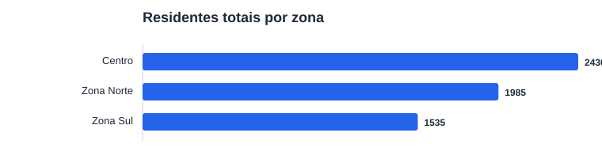
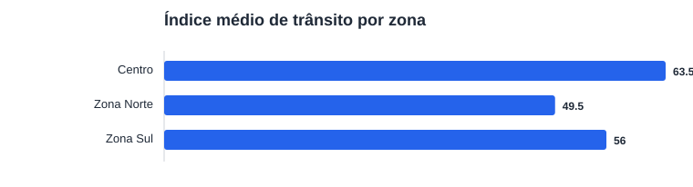

Execução offline e reproduzível. O conteúdo abaixo é calculado exclusivamente do arquivo data/amostra_dados_urbanos.csv.
Amostra, não dado real: esta é uma amostra sintética, pequena e não oficial. As métricas são descritivas do exemplo de software e não permitem conclusões sobre uma cidade, população ou período reais.
| Zona | Registros | Residentes (total) | Área verde (m², média) | Índice de trânsito (média) | Ocupação (média) |
|---|---|---|---|---|---|
| Centro | 2 | 2430 | 2400.0 | 63.5 | 0.79 |
| Zona Norte | 2 | 1985 | 3510.0 | 49.5 | 0.65 |
| Zona Sul | 2 | 1535 | 1805.0 | 56.0 | 0.715 |


A leitura, agregação e renderização usam apenas a biblioteca padrão do Python. Consulte metodologia.md, limitacoes.md e o CSV de resumo. O campo is_sample=true do arquivo de entrada mantém explícito o escopo ilustrativo.